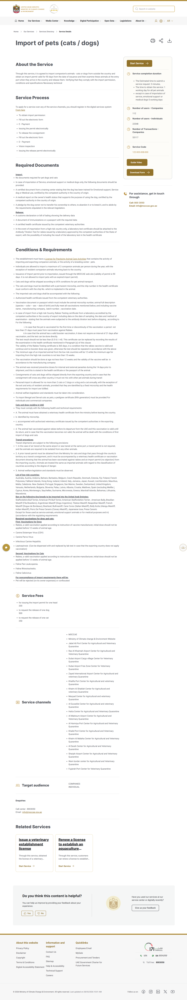

Layer 1 · Fear acknowledgement
What happens if your dog is taken at Dubai airport — and the 3 steps that prevent it
"Without it your dog will be taken away in airport and never give back from you — my friends had the worst experience. Still when I remember I crying." — a real owner, UAE pet community
That fear is real and it has happened. This page explains exactly what triggers a hold at the border, what release costs, and the three documented steps that prevent it.
Layer 2 · The verified answer
A pet is held when its paperwork is incomplete — usually a missing import permit or an invalid rabies record. The requirements are published by MOCCAE and they are specific:
- You apply for the import permit online, before travel. Verified Source Bank C-019 · MOCCAE · 2026-05-28
- The permit is valid for 90 days from issuance. Verified C-010
- The rabies vaccination is valid only at least 21 days after the first vaccination. Verified C-007
- If a pet is held, the published release fee is 500 AED per dog (250 AED per cat). Verified C-003
On the titer-test cost: MOCCAE publishes no figure. Community reports put it at 700–1,300 AED — treat that as community-sourced, not official. Unverifiable · C-001
Layer 3 · Evidence

MOCCAE import-of-pets page — the 500 AED release fee, captured 2026-05-28 (Source Bank C-003, Verified).
The 3 steps that prevent a hold: (1) apply for the MOCCAE permit online before you fly; (2) make sure the rabies vaccination is ≥21 days old and recorded; (3) line the 90-day permit window up with your travel date.
Layer 4 · Related fears
- Worried the paperwork itself is wrong? → Pre-flight document checklist
- Worried the cost is unfair? → How much the rabies titer test really costs in Dubai
- Flying in summer? → Can I move my pet to Dubai in summer?
Download the Dubai pet-import checklist — verified against MOCCAE (2026).Every document, in order, with the permit-timing rule that prevents a hold.